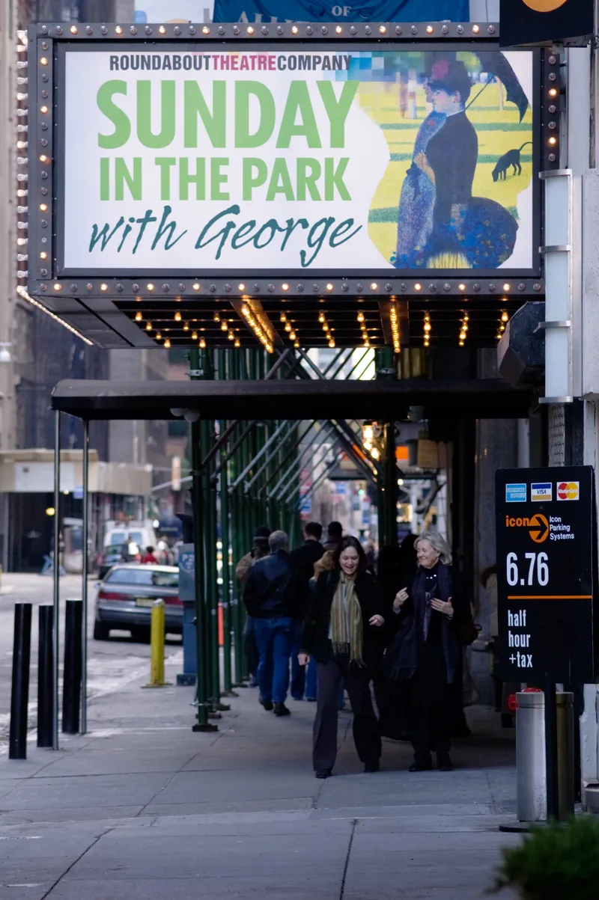
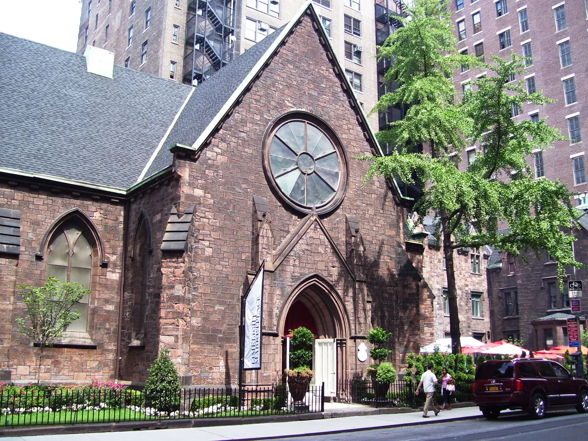
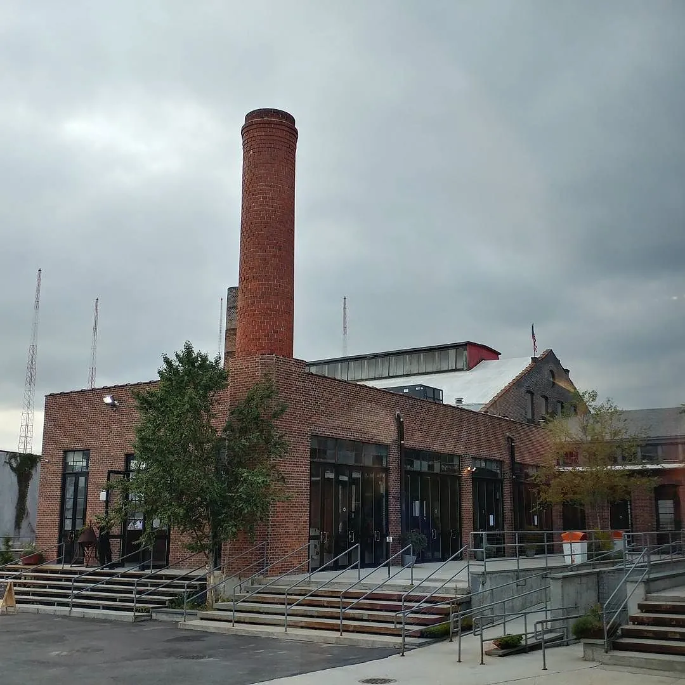

NYC clubs
The best clubs in NYC, from the Paradise Garage to Nowadays
The city that invented the modern club, spent ninety years licensing dancing, and moved its best rooms to Brooklyn and Queens.
Clubs built around the sound.
Ask for the best clubs in New York, or the best nightclubs in NYC, and most of what comes back is bottle service: lounges in Manhattan hotels with a DJ in the corner and a table minimum. This guide is about the other kind of NYC clubs, the ones built around a sound system and a dancefloor, where the music is the reason to go.
That kind of club was more or less invented in New York. The Loft, the Paradise Garage and the DJs who played there set the template that clubs from Chicago to London copied: a DJ at the centre, a room designed around the sound, and a night that ran until morning. New York also spent decades trying to regulate that kind of night out of existence.
The guide runs from the 1970s to now, then covers the best clubs in NYC open today, the techno and house rooms, and how going out in the city works.
The Loft, the Paradise Garage and Studio 54.
The Loft was David Mancuso's home at 647 Broadway, and his first party there, "Love Saves the Day", was on 14 February 1970. It was invitation only, sold nothing, served free food and juice, and charged $2 to cover the rent. The crowd was mixed in every sense, largely Black and largely gay, at a time when gay men were routinely harassed by police in bars and clubs. Mancuso cared more about sound than mixing, and his audiophile system was said to be the best in the city.
The Paradise Garage took the Loft's model and scaled it up. Michael Brody opened it in a former parking garage at 84 King Street, officially on 28 January 1978, with a sound system built by Richard Long, a sprung floor and a dancefloor designed around the speakers. It was a members' club, served no alcohol so it could stay open until ten or later the next morning, and put the DJ at the centre of the room.
The DJ was Larry Levan, and the crowd called his Saturday nights "Saturday Mass". Levan played disco, soul, rock and anything else that moved the floor, experimented with drum machines and synthesisers in his sets, and gave his name to a whole sound: records made famous at the club became "garage classics", and the deeper, gospel-inflected house New York made in the 1980s is still called garage. The house music guide follows that line into Chicago and New Jersey.
The Garage closed in September 1987 with a 48-hour party, weeks before Brody died of AIDS-related illness. Levan died in 1992. The building became a Verizon truck depot and was demolished in 2018.

Studio 54 was the opposite in almost every way. Steve Rubell and Ian Schrager opened it on 26 April 1977 in a former opera house and CBS studio on West 54th Street, and it was famous for its door, its celebrities and its excess rather than its DJs. It closed in 1980 after the two owners were convicted of tax evasion. The building has been a Broadway theatre since 1998. It remains the most famous club in NYC history, remembered for who got in rather than for what was played.
Danceteria to Twilo: the 1980s and 1990s.
After the Garage, New York's club life moved into bigger and stranger buildings. Danceteria ran from 1980 to 1986, most famously on four floors at 30 West 21st Street, mixing rock, dance music and video art. The Tunnel opened in 1986 in a former railway freight terminal on Twelfth Avenue, with old train tracks running through its main room.
The Limelight was the strangest of them. Peter Gatien opened it in November 1983 in the Church of the Holy Communion, a Gothic Revival church on Sixth Avenue at West 20th Street, spending close to $5 million on the conversion. In the 1990s it became one of the city's main rooms for techno, goth and industrial music and a base for the Club Kids, the costumed promoters around Michael Alig.

The decade ended badly for the big clubs. The Limelight was raided in 1995, Alig was convicted of killing a fellow Club Kid, and Gatien, who also owned the Tunnel, was tried in 1998 on drug charges and acquitted, though he was later deported to Canada after pleading guilty to tax evasion. Mayor Rudy Giuliani used the city's old Cabaret Law, a 1926 rule that banned dancing in any bar or restaurant without a licence, as part of his quality-of-life campaign to fine and close venues. Twilo, on West 27th Street from 1995, lost its cabaret licence in 2001, the same year the Tunnel closed.
Not everything was a superclub. In 1996 Joe Claussell, Danny Krivit and François Kevorkian, who had experimented with Larry Levan in the Garage years, started the party Body & Soul, one of the links between the Garage and the house DJs who came after.
Brooklyn takes over.
In the 2000s the underground moved across the East River, to warehouses, lofts and DIY spaces in Williamsburg and Bushwick where rent was cheaper. The club that made that move official was Output, which opened in Williamsburg in January 2013 with a stated mission of giving New York's music-focused underground a home away from Manhattan's celebrity nightlife. It played house and techno on a serious sound system and closed on 1 January 2019, after a New Year's Eve set by John Digweed.
Louie Vega, one half of the New York production team Masters at Work, played Output for Mixmag in 2016.
The law changed too. The New York City Council voted 44 to 1 on 31 October 2017 to repeal the Cabaret Law, after years of campaigns by DIY venues and dance activists. Dancing in a bar no longer needed a special licence, although zoning rules still ban it in large parts of the city.
Brooklyn clubs have also had their casualties. The Brooklyn Mirage, the outdoor venue of the Avant Gardner complex in East Williamsburg, grew from a 2015 pop-up into one of the city's biggest dance venues before Avant Gardner filed for bankruptcy in August 2025. The rooms that last tend to be smaller and run by people from the scene.
The best clubs in NYC now.
These are the best clubs in NYC for house, techno and dance music open now, as of September 2026: the rooms that appear on every serious list, from Time Out's to the techno guides, plus the ones this page's history leads to. None of them is in Manhattan.
| Club | Area | Music and character | Best for |
|---|---|---|---|
| Nowadays | Ridgewood, Queens | House and techno on an SBS Slammer system, no phones on the floor, an outdoor space | Mister Sunday and the Nonstop weekends |
| Basement | Maspeth, Queens | Techno in brick tunnels under the Knockdown Center, open since 2019 | Hard techno and a strict door |
| Public Records | Gowanus, Brooklyn | A hi-fi club room in the former ASPCA headquarters, with a restaurant and bar | A dinner and a dancefloor in one building |
| Good Room | Greenpoint, Brooklyn | A DJ-led main room and the smaller Bad Room | House and disco parties |
| Elsewhere | East Williamsburg, Brooklyn | A 700-capacity hall, a smaller room and a rooftop, open since 2017 | Bigger bookings and all-night parties |
| Paragon | Bed-Stuy, Brooklyn | Techno modelled on early American techno, reopened in 2025 with Kevin Saunderson | Detroit and New York techno |
| Signal | Williamsburg, Brooklyn | A 210-capacity warehouse room with a d&b Audiotechnik system, open since 2025 | A small room with serious sound |
| House of Yes | Bushwick, Brooklyn | A performance-led club, open since 2015 | Costume and theatre nights |
Nowadays, at 56-06 Cooper Avenue in Ridgewood, Queens, belongs to Eamon Harkin and Justin Carter, who have run the Mister Saturday Night party since 2009. The outdoor space opened in 2015 with their Sunday day party, Mister Sunday, and the indoor club followed in late 2017 with a sound system by SBS Slammer. There are no phones on the dancefloor, and on Nonstop weekends the room runs from Saturday at 10pm to Sunday at 10pm.
Basement opened in May 2019 in the brick tunnels beneath the Knockdown Center, a former glass and door factory in Maspeth, Queens. Of all the techno clubs NYC has, it is the one most often compared with Berghain: a red-lit, concrete room, a door that asks you who you have come to hear, and stickers over your phone's cameras.

Public Records is in the former headquarters of the ASPCA in Gowanus, Brooklyn. The collective behind it started in 2017, and the building now holds a restaurant and listening bar, a vegan café and the Sound Room at the back, which is the club: a dark room with a hi-fi system built for dancing.
Good Room in Greenpoint has been going for more than a decade. It has a main room designed around the DJ booth and a smaller room with a wall of vinyl, the Bad Room, and it is home to long-running parties such as FIXED.
Elsewhere, off Jefferson Avenue in East Williamsburg, opened on Halloween 2017, run by the team behind the old Williamsburg venue Glasslands. It is the largest of the five, with a 700-capacity main hall, a smaller room, a rooftop and a mix of live bands and all-night DJ parties.
Beyond those five, the best dance clubs NYC has at a smaller scale include House of Yes in Bushwick, a performance-led club opened in 2015; Gabriela in Williamsburg, opened by Eli Escobar and Rafael Ohayon, where the DJs play deep house, R&B and disco; the queer bar 3 Dollar Bill; and the Sultan Room.
Two newer rooms come up again and again on r/avesNYC, the city's rave forum. Paragon, in Bed-Stuy, was opened by John Barclay, one of the team behind the Bossa Nova Civic Club, with early American techno as its model. It closed in April 2025 over rising costs and reopened on 1 August 2025 with backing from Kevin Saunderson of the Belleville Three, who was born in Brooklyn, and with Joey Beltram among its residents. Signal opened in May 2025 in a warehouse at 175 Morgan Avenue in Williamsburg: a 210-capacity room with a d&b Audiotechnik system, open from the late afternoon or evening until 4am.
Best techno clubs in NYC.
Basement is the answer most people give, and the one a first-time visitor should plan around. It books hard-hitting international names such as Surgeon alongside local DJs, it fills after 2am, and getting in depends on the door.
Paragon is the room most tied to techno's own history, with a Belleville Three member backing it and a New York techno producer of the 1990s among its residents. Nowadays is the other big techno room, especially on its Nonstop weekends, when the indoor club runs for 24 hours on one system. Elsewhere and Public Records book techno regularly, and the big warehouse and outdoor events of the summer happen at the Knockdown Center itself and at one-off locations around Brooklyn and Queens. Beyond the clubs, NYC raves still happen in warehouses and other one-off spaces through the year.
The underground clubs NYC is known for abroad are mostly these rooms plus the parties that move between them. The city has a long techno history of its own, from the Limelight in the 1990s to Output in the 2010s, and producers such as Joey Beltram, whose records defined the harder Belgian sound, came from New York. The techno guide tells that story from Detroit.
House music clubs in NYC.
The house music clubs NYC still has are close to the Garage in spirit if not in size. Mister Sunday at Nowadays is the obvious one: an outdoor party on Sunday afternoons into the evening, with Harkin and Carter and their guests playing house, disco and everything around them. Mister Saturday Night made a series with Boiler Room in 2015.
Good Room and Gabriela lean towards house and disco too, and Public Records mixes dance nights with live and experimental music.
Ask the city's own rave forum where to hear soulful, old-school house, though, and the top answer is that "NYC is more party than venue based": follow the parties, not the rooms. Two come up by name. Soul Summit is a DJ collective for soulful house whose summer festival in Fort Greene Park is free and open to anyone. 718 Sessions is Danny Krivit's party, the Body & Soul co-founder's own night: in 2026 its summer outdoor party was at the Knockdown Center, and it returns to Good Room on 11 October.
New York also has an online radio station that broadcasts from a shipping container in Williamsburg. The Lot Radio streams live DJ sets, and 9,998 of the sets in this site's catalogue of recorded DJ sets come from it, more than from any other broadcaster, as of September 2026. Many of the DJs who play the clubs above play there too. Louie Vega's set is one of its most watched.
Where to go out in NYC.
Most of the best clubs in Brooklyn and Queens sit in a few neighbourhoods: Williamsburg, East Williamsburg and Bushwick in Brooklyn, Ridgewood and Maspeth just over the border in Queens, and Greenpoint and Gowanus a little further out. They are far enough apart that a night out usually means choosing one.
Manhattan still has plenty of NYC nightclubs, but most of them are lounges and bottle-service rooms, and the music-first clubs left it years ago. The best clubs in Manhattan for dancing are fewer and smaller, and the big names on this page are all across the river.
New York nightlife runs late but has hard limits. Under state law alcohol cannot be served from 4am until 8am, Monday to Saturday, so most bars stop then, but clubs such as Nowadays and Basement keep playing without alcohol until 6am or later. Expect the floor to fill after midnight, to show ID, to be asked at the door who you have come to hear, and at some clubs to have your phone camera covered. Some nights need a ticket bought in advance, Mister Sunday among them.
NYC clubs FAQ.
What is the best club in NYC?
For house and techno, the clubs named most often now are Nowadays in Ridgewood and Basement in Maspeth, both in Queens, followed by Public Records, Good Room and Elsewhere in Brooklyn. Which is best depends on the night: Basement for hard techno, Nowadays for long house and techno sessions and the Mister Sunday day party.
What is the most famous club in NYC history?
Studio 54 is the most famous, for its door policy and its celebrities, but the most influential was the Paradise Garage, where Larry Levan was the resident until it closed in 1987. The Loft, David Mancuso's private party from 1970, came before both and set the template for both.
Is NYC good for clubbing?
Yes, though it is spread out. The best clubs are in Brooklyn and Queens rather than Manhattan, and the Cabaret Law that restricted dancing for ninety years was repealed in 2017.
What are the best clubs in Manhattan?
For music-first clubbing, very few: most Manhattan nightclubs are lounges and bottle-service rooms. The clubs that shaped dance music, the Paradise Garage, the Limelight and Twilo, were in Manhattan, but their successors are all in Brooklyn and Queens.
What time do clubs close in NYC?
Alcohol service stops at 4am under New York state law, but clubs can stay open without it. Nowadays usually runs its Friday nights until about 6am and, on Nonstop weekends, from Saturday night through to Sunday night.
Sources.
- Wikipedia: The Loft (New York City)
- Wikipedia: Paradise Garage
- Wikipedia: Studio 54
- Wikipedia: The Limelight
- Wikipedia: New York City Cabaret Law
- Pitchfork: Brooklyn dance club Output closing
- DJ Mag: Mister Saturday Night, 15 years of a New York party
- Gothamist: NYC's best techno club vibe checks you at the door (2023)
- Time Out: 12 best clubs in NYC for techno, house and more
- Nowadays: hours and location
- Elsewhere: about
- Public Records
- DJ Mag: New York club Paragon to reopen thanks to a lifeline from Kevin Saunderson (2025)
- DJ Mag: New Brooklyn club Signal opens (2025)
- Fort Greene Park Conservancy: Soul Summit
- Danny Krivit: 718 Sessions
- Set counts are measured from this site's own catalogue of recorded DJ sets, as of September 2026.
Continue reading
Read next.
 Rave spots~7 min read
Rave spots~7 min readBest Clubs in Tokyo: WOMB, Contact and the Ban on Dancing
WOMB, Contact, Vent and Circus Tokyo: the best clubs in Tokyo for house, techno and bass music, and the 68-year law against dancing that shaped them.
Read article → Rave spots~6 min read
Rave spots~6 min readBest Clubs in Budapest: A38, Instant-Fogas and Turbina
A38's converted cargo ship, the seven rooms of Instant-Fogas and Turbina's techno nights: the best clubs in Budapest now, and the ruin bars several grew out of.
Read article → Rave spots~6 min read
Rave spots~6 min readBest Clubs in Prague: Cross Club, Karlovy Lázně and Ankali
Cross Club's salvaged machinery, Karlovy Lázně's five floors and Ankali's techno nights: the best clubs in Prague, mainstream and underground.
Read article → Rave spots~6 min read
Rave spots~6 min readBest Clubs in Manchester: From the Haçienda to the Warehouse Project
The Haçienda closed in 1997, but its warehouse-first DIY streak still shapes the city: the best clubs in Manchester now, and the Warehouse Project's rise since.
Read article →